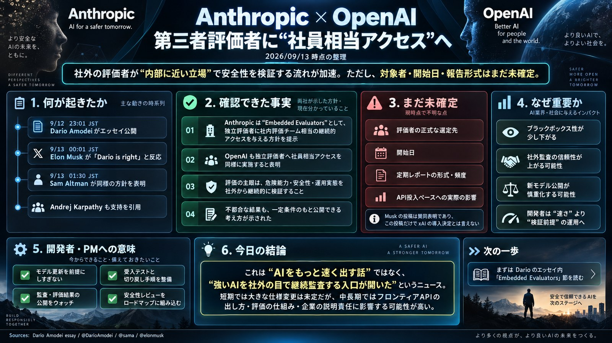

ONE-PAGE BRIEF / 1枚ボード

開発現場を、
第三者に開く。約束の存在と、実施の証拠は分けて読む。
2社が実施を表明
独立評価者に社員相当のアクセス。
具体的な運用条件は続報待ち。
中を見る。外に伝える。
継続的な内部アクセスと公表権。
詳細はAnthropic案を確認。
まだ、決まっていない。
報告形式 ／ APIへの影響
METRは例示。HFは参加希望。
同じ意味にまとめない。
今日の判断：保存する次は「実アクセス開始」と「最初の独立報告」を確認。
賛意 ≠ 導入表明 ≠ 実施
一次資料・本人投稿に基づく本号の概念整理。企業の公式図や、稼働済み制度を示すものではない。[1] [3] [4] [6] [7] [11]
信頼する理由を、
発言から、確かめられる証拠へ。
「社員相当アクセス」は、内部を第三者が検証するための入口。採用判断に使えるかどうかは、その入口から何が見え、何が公表され、何が是正されたかで決まる。
出典と、確認できた範囲。
一次資料・本人投稿を中心に、過去の制度説明と今回の表明を分けて照合した。引用は短い範囲にとどめ、図解・評価軸・実務提案は本号の整理。Xの取得制限や不明点を、確認済みの事実であるかのように補っていない。
- [01]一次資料・提案原文Dario Amodei｜We Must Pace the Frontier 2026年9月。Embedded Evaluators節の権限・公表条件を確認。METRは評価機関の例示。
- [02]本人X投稿Dario Amodei｜エッセイ公開・実施表明 X検索索引、原文、Altman投稿内の引用で照合。
- [03]本人X投稿Sam Altman｜同様に実施すると表明 X検索索引・本文転載[13]・Reuters/APを突き合わせた。
- [04]本人X投稿Elon Musk｜Dario is right X検索索引・Reuters/APで確認。xAIの導入表明とは区別。
- [05]本人X投稿Andrej Karpathy｜業界での実現を支持 本人投稿・プロフィールの検索索引で支持の文言を確認。
- [06]本人X投稿Clem Delangue｜Open Alignment Initiative 検索索引と本人のLinkedIn投稿[7]で内容を照合。
- [07]本人による同内容の投稿Clem Delangue｜取り組みと参加希望の説明 Thomas Wolfが率いるHugging Faceの取り組みと、評価者プログラムへの参加希望。
- [08]本人X投稿・取得は一部Neel Nanda｜実効性に関する指摘 取得できた冒頭の検索索引だけを引用・要約。全文の主張へ一般化しない。
- [09]評価機関の一次資料・先行事例METR｜Frontier Risk Report 公表2026/05/19、評価対象期間02/16–03/16。資料の公表日と対象期間を区別。
- [10]公式一次資料・過去の制度説明OpenAI｜Strengthening our safety ecosystem with external testing 2025/11/19公表。第三者評価のアクセス・公表条件の比較に使用。現在の全契約を示す資料ではない。
- [11]報道による照合Reuters｜能力向上のペース調整と各社の反応 2026/09/12。三段階案とAltman・Muskの反応の裏付け。
- [12]報道による照合AP｜安全対策に時間を与えるための減速提案 提案の性質と、表明・賛意の区別を確認。将来の危険性は発言者の見解。
- [13]補助経路・非公式ミラーXCancel｜Sam Altman投稿の本文転載 X本文の取得制限を補うため使用。独立した別の証拠とは数えない。
- [14]公式の自己調査報告・背景資料Anthropic｜サイバー評価中の3事例の調査 2026/07/30、08/03追記。評価環境の設定と実際の外部アクセスに関する説明。
- [15]公式の自己調査報告・背景資料OpenAI｜The Hugging Face incident and the road ahead 2026/08/26。7月の内部評価事象と改善策の説明。一般向け製品の条件と混同しない。
編集・調査ノート：日時、独立性、記述の限界
本号は2026/09/13配信用。調査基準時点は09:02 JST。本文の「未確認」「記載がない」は、その時点で参照した上記資料の範囲を意味し、世界中の発信を網羅したという主張ではない。Xは検索索引に引用投稿の本文が混在する場合があるため、発言者と引用元を区別した。Neel Nandaの投稿は取得できた冒頭だけを使用した。
投稿時刻は、投稿IDから取り出したミリ秒時刻を日本標準時へ変換して分単位で表示した。これはX画面の表示時刻の再確認ではなく、IDに由来する時刻の算出である。編集時刻や制度の開始時刻ではない。
「社員相当」は原文の内部リスク評価担当者との比較を指す。一般の利用者へのアクセス開放、全社員と同じ権限、モデルの全面公開ではない。「常設」「継続的」は制度としてのアクセスを指し、24時間の有人監査体制が確定したという意味ではない。
今回、評価者の選任・契約締結・実アクセス開始・独立報告の公表を実地検証していない。企業の自己調査報告と独立機関の報告は出典種別を分けている。APIへの影響・自社開発の対応・チェックリストは条件付き分析または運用提案であり、提供元の新しい仕様ではない。
レイアウトは指定の9/11版に合わせた構成。フォント、スクリプト、図解に外部配信ファイルを使わず、HTML単体で本文を表示する。外部サイトへの移動は出典などのリンクを選んだときだけ。アクセス解析や外部APIの呼び出しは含めていない。